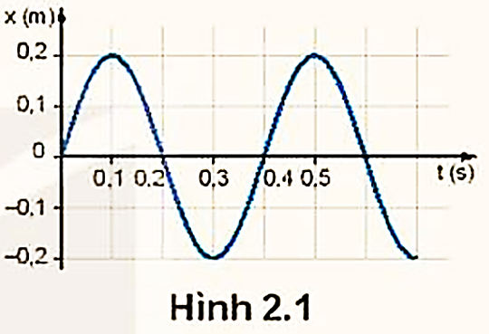
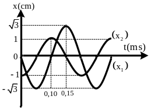
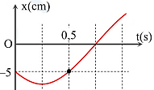

PHẦN II. Câu trắc nghiệm đúng sai
Trong mỗi ý a), b), c), d) chọn Đúng hoặc Sai. Đúng 1 ý: 0,1 · 2 ý: 0,25 · 3 ý: 0,5 · 4 ý: 1,0 điểm.
1
Cho đồ thị như hình 2.1

a) Hình 2.1 là đồ thị dao động điều hòa của một vật.
b) Tại thời điểm $t = 0{,}1$ s vật có tọa độ 0,1 m.
c) Chu kì của vật là 0,4 s
d) Phương trình dao động của vật là $x=0{,}2\cos(5\pi t-\frac{\pi}{2})$ (m).
2
Đồ thị li độ theo thời gian $x_1$, $x_2$ của hai chất điểm dao động điều hoà được mô tả như hình vẽ:

a) Biên độ của dao động $x_2$ là 10 cm.
b) Hai dao động $x_1$ và $x_2$ có cùng tần số là 1,25 Hz.
c) Độ dịch chuyển của chất điểm thứ hai từ thời điểm $t_1=0{,}2$ s đến $t_2=0{,}6$ s là 20 cm.
d) Dao động $x_1$ sớm pha hơn dao động $x_2$ là $\frac{\pi}{2}$ rad.
3
Một vật dao động có đồ thị li độ - thời gian được mô tả như hình dưới. $\pi=3,14$.

a) Tần số dao động của vật là 0,25 Hz.
b) Tốc độ tại vị trí C của đồ thị là 0 cm/s.
c) Động năng của vật tại vị trí B là cực đại.
d) Từ thời điểm 4 s đến thời điểm 8 s có 4 lần vật cách vị trí cân bằng 20 cm.
4
 Dao động của một vật là tổng hợp của hai dao động điều hoà cùng phương có li độ lần lượt là $x_1$ và $x_2$. Đồ thị biểu diễn sự phụ thuộc của $x_1$ và $x_2$ theo thời gian t như hình vẽ (trong đó x tính bằng cm, t tính bằng s).
Dao động của một vật là tổng hợp của hai dao động điều hoà cùng phương có li độ lần lượt là $x_1$ và $x_2$. Đồ thị biểu diễn sự phụ thuộc của $x_1$ và $x_2$ theo thời gian t như hình vẽ (trong đó x tính bằng cm, t tính bằng s).a) Chu kì dao động của vật là 1,6 s
b) Tại thời điểm 0,4 s, hai dao động thành phần có cùng li độ.
c) Độ lệch pha giữa hai dao động thành phần là $\frac{\pi}{3}$ (rad)
d) Hai dao động thành phần có cùng tần số, cùng biên độ dao động
5
Hình 4.3 là đồ thị li độ - thời gian của một vật dao động điều hoà.

a) Biên độ dao động là 10 cm.
b) Chu kì dao động là T = 120 ms.
c) Pha ban đầu của vật dao động là π/2.
d) Phương trình của dao động của vật là $x = 15\cos(50\pi t/3 - \pi/2)$ cm.
6
Hai vật thực hiện dao động điều hoà cùng phương, cùng chu kì dao động có li độ $x_1$ và $x_2$ phụ thuộc thời gian như hình vẽ.

a) Biên độ dao động (1) gấp $\sqrt{3}$ lần biên độ dao động (2).
b) Dao động (1) trong khoảng 0,15 ms vật đi được 3 cm.
c) Pha ban đầu của (2) là $\frac{\pi}{2}$.
d) Hiệu pha ban đầu giữa dao động (2) và (1) bằng $\pi$ rad.
7
Hai vật thực hiện dao động điều hoà cùng phương, cùng chu kì dao động có li độ $x_1$ và $x_2$ phụ thuộc thời gian như hình vẽ.

a) Biên độ dao động (1) gấp $\sqrt{3}$ lần biên độ dao động (2).
b) Dao động (1) trong khoảng 0,15 ms vật đi được 3 cm.
c) Pha ban đầu của (2) là $\dfrac{\pi}{2}$.
d) Hiệu pha ban đầu giữa dao động (2) và (1) bằng $\pi$ rad.
8
Một vật dao động điều hòa có đồ thị biểu diễn sự phụ thuộc của li độ $x$ vào thời gian $t$ như hình bên.

a) Chu kì của vật 2 s.
b) Li độ cực đại $5\sqrt{2}$ cm.
c) Pha ban đầu $-\frac{3\pi}{4}$.
d) Phương trình vận tốc $v=5\pi\sqrt{2}\cos(\pi t-\frac{3\pi}{4})$ cm/s